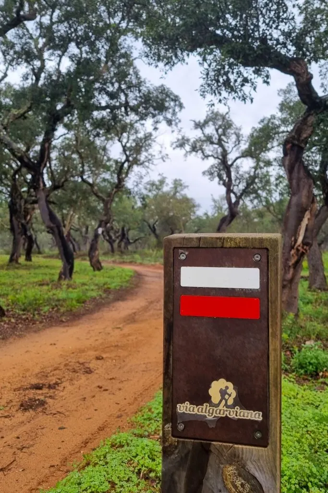

O ALUT
Correr no Algarviana Ultra Trail é percorrer a história do Algarve e as suas inspirações multiculturais.

A Meta
O limite de 72 horas obriga a uma gestão estratégica do sono e da alimentação. Chegar ao fim é a vitória suprema.
Correr no Algarviana Ultra Trail é percorrer a história do Algarve e as suas inspirações multiculturais.

O limite de 72 horas obriga a uma gestão estratégica do sono e da alimentação. Chegar ao fim é a vitória suprema.